BRIER2: Bregman-divergence-based Regularized Integrative Estimator in Regression
BRIER2.Rmd1. Introduction
1.1 Background
Genetic risk prediction plays an increasingly important role in precision medicine by quantifying how inherited genetic variation contributes to complex traits. Approaches such as polygenic risk scores (PRS) for disease risk stratification, drug response prediction for individualized treatment, and genetically regulated expression (GReX) models for linking genetic variation to transcriptomic architecture illustrate the expanding influence of statistical genetics on biomedical research and its emerging role in clinical translation.
Despite these advances, prediction performance remains limited in
clinically underrepresented populations with scarce data. To address
these gaps, we previously introduced BRIER [LINK TO
BRIER1], which integrates a well-powered external model with either
individual- or summary-level data from a target cohort using a Bregman
divergence framework. Here, we introduce BRIER2, a
comprehensive update of the previous version.
1.2 Key Modules
BRIER2 implements a flexible Bregman-divergence based
integration framework to improve prediction of complex traits in a
target local cohort by leveraging information from external sources
under diverse data-availability settings. The framework is implemented
through three principled module functions, BRIER.FULL,
BRIER.I, and BRIER.S. Below, we briefly
describe the setting for which each function is designed and provide
worked examples illustrating their use.
BRIER.FULL is designed for settings in which
individual-level data are available in both the target
cohort and the external cohort. In particular, both the outcome \(y\) and predictor matrix \(X\) are observed for samples from each data
source.
BRIER.I is designed for settings in which
individual-level data are available in the target
cohort, but the external sources do not share raw data and instead
provide only pre-trained models (e.g., published PRS
weights, penalized regression coefficients). Such settings commonly
arise in applications such as predicting binary disease status using
gene expression profiles , or constructing genetic prognostic models for
time-to-event outcomes .
BRIER.S is designed for settings where only summary
statistics (e.g. GWAS summary statistics and LD matrix) are available in
both target and external cohorts. This module is particularly useful for
constructing predictors such as polygenic risk scores (PRS) from GWAS
summary statistics, or genetically regulated expression (GReX) models
from eQTL summary statistics .
We provide a flowchart outlining the BRIER2 pipeline and
its major components.

1.3 Features
BRIER2 provides a comprehensive and flexible framework
for integrative genetic risk modeling, with the following key
features:
-
Flexibility to integrate external information according to
different data access and privacy constraints
BRIER2flexibly integrates external information with target data across a wide range of data-availability scenarios, including individual-level data, summary statistics, and pre-trained external models. -
Support various distribution families from complex
traits
BRIER2supports a wide range of distribution families to accommodate continuous, binomial, count, and time-to-event outcomes. -
A suite of hyperparameter tuning tools.
Provide information-criterion based hyperparameter tuning for core modeling functions (BRIERi.selection, andBRIERs.selection) without requiring an independent validation set. -
Integration of multiple external models.
Ensemble-based weighting of multiple external models enables scalable integration of multiple information sources without inflating the hyperparameter space, substantially reducing computational burden.
In addition, BRIER2 includes several features designed
to improve practical usability in genetic applications:
-
Improved computational efficiency.
Core components are fully optimized using Rcpp and support multi-core parallel computing, resulting in substantial runtime improvements for large-scale genetic analyses. -
Support for imputed genotype data.
ThecalLDmodule directly processes imputed genotype data in BGEN files to generate sparse LD matrices. -
Precomputed ancestry-specific LD panels.
Built-in LD reference panels for major global ancestries (EUR, AFR, EAS, SAS, AMR) are provided in both hg19 and hg38 genomic builds. -
Model interpretability.
A collection of downstream analysis and visualization tools is provided to facilitate evaluation and biological interpretation of fitted models.
2. Installation
BRIER2 requires the following R packages:
Rcpp,RcppArmadillo, Matrix,
pROC. These can be installed with
install.packages(
c("Rcpp", "RcppArmadillo", "Matrix", "BEDMatrix", "pROC"),
dependencies = TRUE
)The package can then be installed from GitHub using:
remotes::install_github("UM-KevinHe/BRIER2", ref = "main")After installation, load the package with:
3. BRIERfull: Modeling with individual-level target and
external data
When individual-level data are available for both the target cohort
and one or more external cohorts, BRIERfull() integrates
external individual-level data with the target data through a weighted
pseudo-likelihood framework. This setting represents the most
information-rich use case, because both predictor and outcome data are
available across cohorts.
To use BRIERfull(), users need to provide:
- a pooled individual-level predictor design matrix
Xcontaining observations from both the target and external cohorts; - a phenotype or outcome vector
yfor all observations in the pooled data; - an indicator vector
cohortspecifying the which cohort each observation belongs to; - a list of tuning parameters
eta.list, specifying the degree of information transferred from each external cohort. If a single vector is provided, it is automatically replicated across multiple external cohorts; - model specification arguments, such as the outcome family
familyand penalty typepenalty.
BRIERfull() currently supports continuous, binary,
count, and time-to-event outcomes through Gaussian, Binomial, Poisson,
and Cox regression models. Users should restrict the analysis to
predictors that are shared across the target and external cohorts.
In this section, we provide a toy example illustrating the use of
BRIERfull() with the built-in dataset
Data_BRIERfull.
3.1 Data format and preprocessing
We begin by loading the example dataset. The object contains one target cohort and three external cohorts.
data("Data_BRIERfull")
data <- Data_BRIERfull
names(data)
# [1] "target" "external1" "external2" "external3"
X0 <- data$target$train$X
y0 <- data$target$train$y
X1 <- data$external1$train$X
y1 <- data$external1$train$y
X2 <- data$external2$train$X
y2 <- data$external2$train$yNext, we pool the individual-level data across cohorts. We note that the cohort indicator vector should be provided to denote the origin of each observation, where 0 indicates the target data and positive integers (e.g., 1, 2, …) indicate different external data sources.
3.2 Fitting BRIERfull
The function BRIERfull() fits a sequence of weighted
generalized linear models that jointly models individual-level data from
the target cohort and external cohort(s) through a list of integration
weight \(\eta\). Larger values of \(\eta\) allow the model to integrate more
information from the external cohort. The user should rely on prior
knowledge or problem-specific considerations to determine an appropriate
range of \(\eta\)’s.
3.3 Hyperparameters tuning
The framework involves two classes of hyperparameters: the regularization parameter \(\lambda\) and the integration weights \(\{\eta_m\}_{m=1}^M\). For the regularization parameter \(\lambda\), we adopt the classic regularization path strategy implemented in package , and provide a data-driven sequence of \(\lambda\) for each \(\eta\) value.
Tuning the integration weights \(\eta\) is more challenging due to the
heterogeneity between the target and external data sources.
BRIER2 provides two strategies for tuning \(\eta\): grid search and Bayesian
optimization, implemented through the rBayesianOptimization
package. In this tutorial, we illustrate hyperparameter tuning using
grid search. Additional details and examples for Bayesian optimization
are provided in Appendix:
Selection of integration weight using Bayesian Optimization.
For grid search, BRIERfull.selection() evaluates model
performance over user-specified candidate values of \(\eta\) and the corresponding data-driven
regularization path for \(\lambda\).
When an independent validation set is available, the function selects
the optimal hyperparameter combination \((\{\eta_m\}_{m=1}^M, \lambda)\) according
to a user-specified validation metric. The example below illustrates the
use of mean squared prediction error (MSPE) as the evaluation metric for
a continuous outcome. Additional evaluation metrics for different
outcome types are provided in the Appendix: Distribution Family and Evaluation
Metrics.
fit <- BRIERfull.selection(
fit, criteria = "gaussian.mspe",
X.val = data$target$validation$X,
y.val = data$target$validation$y
)
# Best eta: ( 0.774, 0.167 )
# Best lambda: 0.752 Function plot.eta can be used to guide and visualize the
selection of the best performing integration weight \(\eta\), according to different evaluation
metrics used in the validation set. For multiple external cohorts
(>1), plot.eta do not generate ggplot objects for
plotting but only generate summary results. The user could visualize
using XXX as illustrated below. The below figure displays the heat map
of predictive performance (here, MSPE for a Gaussian outcome) evaluated
on the validation set as a function of \(\eta_1\) and \(\eta_2\). The optimal integration weight is
identified as the value of \(\eta\)
combination that minimizes the evaluation criterion.
The function plot.eta can be used to guide and visualize
the selection of the best-performing integration weight \(\eta\), using different evaluation metrics
computed on the validation set. When only a single external cohort is
provided, plot.eta returns a ggplot2 object
that displays predictive performance as a function of \(\eta\). When multiple external cohorts are
provided (>1), the integration weight becomes a vector \((\eta_1, \eta_2, \ldots, \eta_M)\), and a
one-dimensional curve is no longer sufficient to summarize predictive
performance. In this case, plot.eta does not return a
ggplot2 object and instead outputs a summary table
containing the evaluation metric across all candidate \(\eta\) combinations. Users can then
visualize these results using standard heatmap tools (e.g.,
ggplot2::geom_tile, lattice::levelplot, or
graphics::image), as illustrated below.
The figure below displays a heatmap of predictive performance (here, MSPE for a Gaussian outcome) evaluated on the validation set as a joint function of \(\eta_1\) and \(\eta_2\). The optimal integration weight is identified as the combination \((\eta_1, \eta_2)\) that minimizes the evaluation criterion.
out <- plot.eta(fit)
head(out$summary.df)
# eta_1 eta_2 criteria metric metric.lo metric.hi
# 1 0.0000000 0 gaussian.mspe 137.9169 NA NA
# 2 0.1000000 0 gaussian.mspe 135.6191 NA NA
# 3 0.1668101 0 gaussian.mspe 133.8548 NA NA
# 4 0.2782559 0 gaussian.mspe 131.5709 NA NA
# 5 0.4641589 0 gaussian.mspe 129.7242 NA NA
# 6 0.7742637 0 gaussian.mspe 129.2638 NA NA
df <- out$summary.df
df$eta_1_lab <- factor(round(df$eta_1, 1))
df$eta_2_lab <- factor(round(df$eta_2, 1))
best <- df[which.min(df$metric), ]
p <- ggplot(df, aes(x = eta_1_lab, y = eta_2_lab, fill = metric)) +
geom_tile(color = "white") +
geom_point(
data = best, aes(x = eta_1_lab, y = eta_2_lab),
shape = 17, size = 5, color = "black", inherit.aes = FALSE
) +
scale_fill_gradient(low = "#31a354", high = "#f7fcb9", name = "MSPE") +
labs(x = expression(eta[1]), y = expression(eta[2])) +
theme_classic(base_size = 13, base_family = "serif") +
theme(
panel.grid = element_blank()
)
p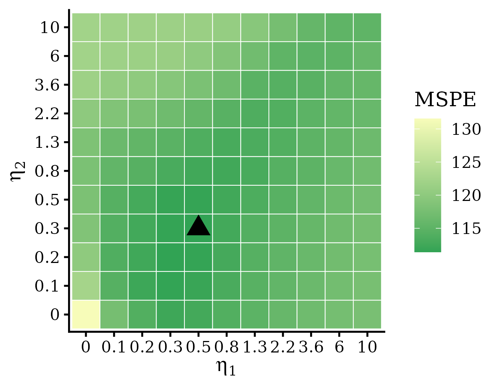
4. BRIERi: modeling with individual-level target data
and trained external models
External individual-level data are often inaccessible due to privacy
regulations or institutional agreements. Instead, external information
may only be available in the form of trained prediction models,
typically represented by estimated regression coefficients \(\check{\beta}\). In this setting,
BRIER2 integrates external model information with
individual-level target data through function BRIERi().
To use BRIERi(), users need to provide:
- an individual-level predictor design matrix
Xfrom both the target cohort; - a phenotype or outcome vector
yfrom both the target cohort; - a matrix of external coefficient estimates
beta.external, where each column corresponds to one external model. The coefficient vector should include an intercept estimate; - a list of tuning parameters
eta.list, specifying the degree of information transferred from each external cohort. If a single vector is provided, it is automatically replicated across multiple external cohorts; - model specification arguments, such as the outcome family
familyand penalty typepenalty.
In this section, we provide a toy example illustrating the
integration of a single external model using BRIERi() with
the built-in dataset Data_BRIERi. To integrate multiple
external models, BRIERi() provides several combination
strategies through the argument multi.method, including
direct use of multiple external models, principal component analysis
(PCA)-based combination, and stacking-based combination. Details are
provided in Appendix: Integration of
Multiple External Models.
4.1 Data format and preprocessing
We begin by loading the example dataset. The object contains one target cohort and a matrix of three external models.
4.2 Fitting BRIERi
The function BRIERi() fits a sequence of generalized
linear models on the external cohort weighted response through a list of
integration weight \(\eta\). Larger
values of \(\eta\) allow the model to
integrate more information from the external cohort. The user should
rely on prior knowledge or problem-specific considerations to determine
an appropriate range of \(\eta\)’s.
4.3 Hyperparameters tuning
The framework involves two classes of hyperparameters: the regularization parameter \(\lambda\) and the integration weights \(\{\eta_m\}_{m=1}^M\). For the regularization parameter \(\lambda\), we adopt the classic regularization path strategy implemented in package , and provide a data-driven sequence of \(\lambda\) for each \(\eta\) value.
Tuning the integration weights \(\eta\) is more challenging due to the
heterogeneity between the target and external data sources.
BRIER2 provides two strategies for tuning \(\eta\): grid search and Bayesian
optimization, implemented through the rBayesianOptimization
package. In this tutorial, we illustrate hyperparameter tuning using
grid search. Additional details and examples for Bayesian optimization
are provided in Appendix:
Selection of integration weight using Bayesian Optimization.
For grid search, BRIERi provides three criterion to
evaluate each candidate pair of hyperparameters \((\eta, \lambda)\): cross-validation,
evaluation on an independent validation set, and information-based
criteria. The function BRIERi.cv performs cross-validation
on the training data, using the predicted deviance as evaluation
criteria, with the specific deviance definition provided in Appendix: Distribution Family and Evaluation
Metrics.
fit <- BRIERi.cv(X, y, beta.external = beta.external, eta.list = c(0, exp(seq(log(0.1), log(10), length.out = 10))))
# Best eta: 10
# Best lambda: 0.239 BRIERi.selection can also select the optimal
hyper-parameters if an independent validation set is provided. Below
displays an example of using MSPE as evaluation metric for continuous
outcome. Additional evaluation metrics for different outcomes are
provided in the Appendix: Distribution
Family and Evaluation Metrics.
fit <- BRIERi.selection(
fit, criteria = "gaussian.mspe",
X.val = data$target$validation$X,
y.val = data$target$validation$y
)
# Best eta: 2.154
# Best lambda: 0.38 For continuous, binary, and count outcomes, users can also utilize information-based criteria to tune the optimal hyperparameters \((\eta, \lambda)\). We implemented Bayesian information criteria (BIC), Mallow’s \(C_p\) (\(C_p\)), and generalized cross validation (GCV;). The required arguments of different tuning methods are summarized in the table below. Detailed formula of information criteria is summarized in Appendix: Information Criteria for Hyper-parameter Tuning.
Based on extensive simulation studies and real-data applications, we
recommend BIC, as it consistently achieves better
predictive performance.
fit <- BRIERi.selection(
fit, criteria = "BIC"
)
# Best eta: 10
# Best lambda: 0.69The function plot.eta can be used to guide and visualize
the selection of the optimal integration weight \(\eta\) based on predictive performance
under different evaluation metrics from cross-validation and an
independent validation set, or based on information-criterion values.
The left panel displays the predictive performance (here, MSPE for a
Gaussian outcome) evaluated on the validation set as a function of \(\eta\), while the right panel shows the
corresponding information-criterion curve (e.g., BIC). The optimal
integration weight is identified as the value of \(\eta\) that minimizes (or maximizes,
depending on the metric) the evaluation criterion.
out <- plot.eta(fit)
out$plot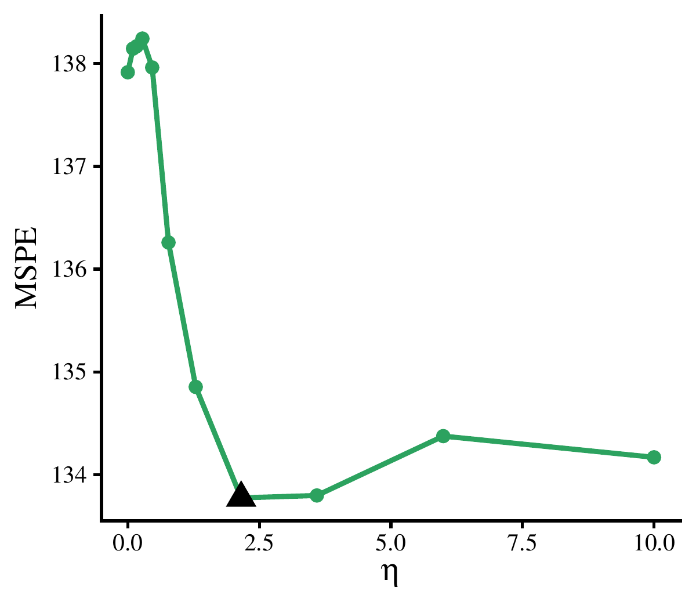
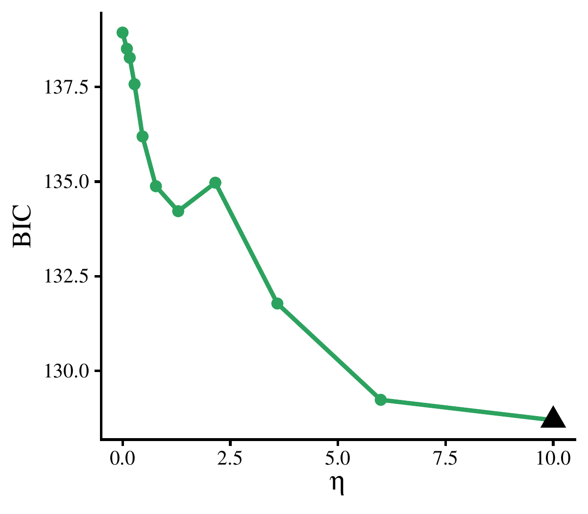
5. BRIERs: modeling using summary level target and
external data
When only summary statistics are available for the target and
external cohorts, BRIER.S provides a flexible framework for
integrating target and external information using Bregman divergence.
The most common source of such summary statistics is marginal GWAS
analyses of the trait of interest and BRIERs model the
polygenic risk of the trait of interest.
To use BRIERs(), users need to provide:
- A data frame
sumstatsof marginal correlation estimate from the target cohort; - A sparse matrix
XtXof correlation (LD) matrix from the target cohort; - a matrix of external coefficient estimates
beta.external, where each column corresponds to one external model. The coefficient vector should not include an intercept estimate; - a list of tuning parameters
eta.list, specifying the degree of information transferred from each external cohort. If a single vector is provided, it is automatically replicated across multiple external cohorts; - model specification arguments, such as the outcome family
familyand penalty typepenalty.
We note that if only GWAS summary statistics or marginal correlation
are available from external cohorts, users should train a joint model
directly from summary-level data. BRIER.S currently
supports modeling of continous, binary, and count outcomes.
In this section, we provide a toy example illustrating the
integration of a single external model using BRIERs() with
the built-in dataset Data_BRIERs. To integrate multiple
external models, BRIERs() provides several combination
strategies through the argument multi.method, including
direct use of multiple external models, principal component analysis
(PCA)-based combination, and stacking-based combination. Details are
provided in Appendix: Integration of
Multiple External Models.
5.1 Data format and preprocessing
We begin by loading the example dataset. The object contains one target cohort and a matrix of three external models.
data("Data_BRIERs")
data <- Data_BRIERs
names(data)
# [1] "target" "beta.external"
X <- data$target$train$X Then, we calculate the marginal correlation estimate from marginal
t-type test p values, sample size, and effect direction using the
function p2cor(). The LD matrix from the target cohort is
calculated using the function calLD()
summary <- data$target$train$sumstats
summary$corr <- p2cor(summary$pval, summary$n, sign = sign(summary$stats))
XtX.list <- calLD(X, summary)
beta.external <- data$beta.external[, 1]For genetic risk prediction using GWAS summary statistics,
BRIER2 also provides the helper function
PreprocessS() for standard preprocessing in
BRIERs modeling. Details are provided in Appendix: Data Processing of
Genetic Risk Prediction using BRIERs.
5.2 Fitting BRIERs
The function BRIERs() fits a sequence of generalized
linear models on the external cohort weighted response through a list of
integration weight \(\eta\). Larger
values of \(\eta\) allow the model to
integrate more information from the external cohort. The user should
rely on prior knowledge or problem-specific considerations to determine
an appropriate range of \(\eta\)’s. We
highly recommend to specify the exact outcome family as it is important
for downstream analysis.
5.3 Hyperparameters tuning
The framework involves two classes of hyperparameters: the regularization parameter \(\lambda\) and the integration weights \(\{\eta_m\}_{m=1}^M\). For the regularization parameter \(\lambda\), we adopt the classic regularization path strategy implemented in package , and provide a data-driven sequence of \(\lambda\) for each \(\eta\) value.
Tuning the integration weights \(\eta\) is more challenging due to the
heterogeneity between the target and external data sources.
BRIER2 provides two strategies for tuning \(\eta\): grid search and Bayesian
optimization, implemented through the rBayesianOptimization
package. In this tutorial, we illustrate hyperparameter tuning using
grid search. Additional details and examples for Bayesian optimization
are provided in Appendix:
Selection of integration weight using Bayesian Optimization.
For grid search, BRIERs provides two criterion to
evaluate each candidate pair of hyperparameters \((\eta, \lambda)\): evaluation on an
independent validation set, and information-based criteria.
The function BRIERs.selection() can select the optimal
hyperparameters if an independent validation set is provided. We note
that since BRIERs() generate standardized coefficient, it
is highly recommended to standardized predictors and outcome in the
validation and testing data set before hyperparameter tuning. Below
displays an example of using MSPE as evaluation metric for continuous
outcome. Additional evaluation metrics for different outcomes are
provided in the Appendix: Distribution
Family and Evaluation Metrics.
X_val <- standardize_X(data$target$validation$X)[[1]]
y_val <- standardize_X(as.matrix(data$target$validation$y))[[1]]
fit <- BRIERs.selection(
fit, criteria = "gaussian.mspe",
X.val = X_val,
y.val = y_val
)
# Best eta: 10
# Best lambda: 0.021 When an independent validation set is not available, users may rely
on information-based criteria to tune the optimal hyperparameters \((\eta, \lambda)\). We implemented
Generalized information criteria (GIC; specified by argument
criteria = "GIC"), Mallow’s \(C_p\) (\(C_p\); specified by argument
criteria = "Cp"), and pseudo-validation (GCV; specified by
argument criteria = "pseu.val"). The required arguments of
different tuning methods are summarized in the table below. Detailed
formula of information criteria is summarized in Appendix: Information Criteria for
Hyper-parameter Tuning.
Based on extensive simulation studies and real-data applications, we recommend \(Cp\) or \(GIC\), as it consistently achieves better predictive performance.
fit <- BRIERs.selection(
fit, criteria = "GIC",
TN = nrow(X), h2 = 0.2
)
# Best eta: 10
# Best lambda: 0.064 The function plot.eta can be used to guide and visualize
the selection of the optimal integration weight \(\eta\) based on predictive performance
under different evaluation metrics from an independent validation set,
or based on information-criterion values. The left panel displays the
predictive performance (here, MSPE for a Gaussian outcome) evaluated on
the validation set as a function of \(\eta\), while the right panel shows the
corresponding information-criterion curve (e.g., GIC). The optimal
integration weight is identified as the value of \(\eta\) that minimizes (or maximizes,
depending on the metric) the evaluation criterion.
out <- plot.eta(fit)
out$plot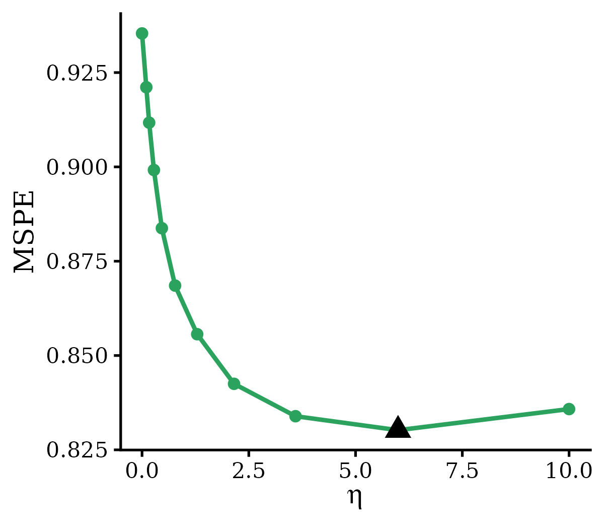
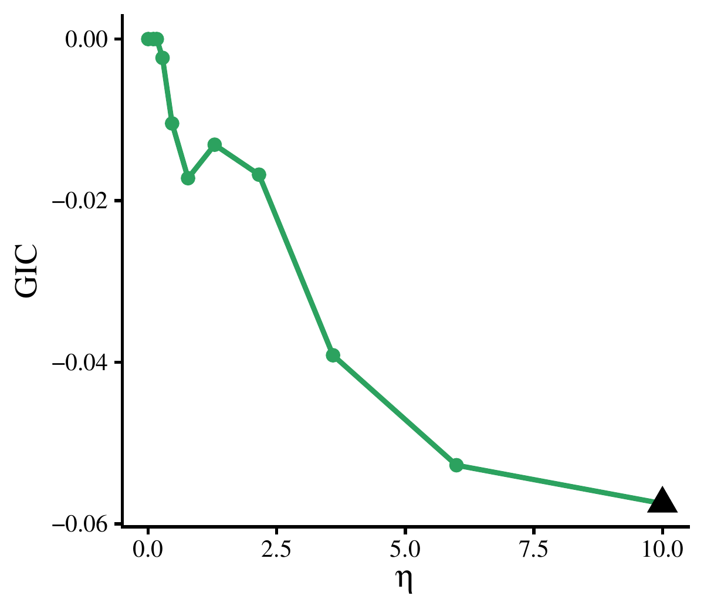
6. Downstream Analysis
We provide a suite of functions for evaluating the predictive
performance of fitted BRIER2 models. To accommodate complex
outcomes from different distribution families, a comprehensive set of
evaluation metrics is supported, including predictive deviance for
general outcomes, AUC for binary outcomes, and C-index for survival
outcomes. Additional details are provided in the Appendix: Distribution Family and Evaluation
Metrics. We illustrate the usage of this plotting functions using
fitted BRIER models from summary statistics using
BRIERs()
6.1 Evaluation of BRIER2 model
We introduce several functions for evaluating the predictive
performance of fitted models. For complex outcome from different
distribution family, we provide comprehensive evaluation metrics to
evaluate BRIER2 performance, for example, predictive
deviance, AUC (binary outcomes), and C-index (survival outcomes).
Additional details are provided in the Appendix: Distribution Family and Evaluation
Metrics.
plot.eta
In addtion to guiding the selection of integration weight \(\eta\) in parameter tuning, the
plot.eta function visualizes predictive performance under
user-specified evaluation metrics as a function of the integration
weight \(\eta\), if a testing set is
provided. This plot is particularly useful for assessing heterogeneity
between the target (target) data and external sources.
For a single external cohort, plot.eta returns a
ggplot2 object in which the solid green curve traces
predictive performance across candidate values of \(\eta\), and a black triangle marks the
value of \(\eta\) selected during
hyperparameter tuning. The shape of this curve carries direct
interpretive value: a monotonic improvement followed by a plateau or
shallow decline indicates that the external information is well aligned
with the target population, while a steady decline suggests that the
external source is highly heterogeneous and may not warrant
integration.
For multiple external cohorts (\(M >
1\)), the integration weight becomes a vector \((\eta_1, \ldots, \eta_M)\) and a
one-dimensional curve is no longer adequate. In this case,
plot.eta does not return a ggplot2 object and
instead outputs a summary table of evaluation metrics across all
candidate \(\eta\) combinations. Users
can visualize these results using standard heatmap tools (e.g.,
ggplot2::geom_tile, lattice::levelplot, or
graphics::image) to identify regions of the \(\eta\)-space that yield the best predictive
accuracy.
In genetic applications such as polygenic risk score (PRS)
evaluation, outcomes often need to be adjusted for environmental or
clinical confounders prior to assessment. In these settings, users may
pass a data.frame to the covar.data argument
containing the testing-set phenotype together with relevant covariates,
and specify the trait and confounder column names. The
standardize.data option controls whether the phenotype is
standardized after confounder adjustment. To further reduce variability
in performance estimates introduced by sampling, plot.eta
supports bootstrap resampling, which yields more stable estimates of
predictive accuracy and a corresponding uncertainty band around the
\(\eta\)-curve.
Taken together, the \(\eta\)-curve clarifies how varying degrees of external information transfer affect predictive performance on the target population. It provides a visual summary of cross-cohort heterogeneity and helps practitioners gauge the appropriate degree of information borrowing for their application.
Integrating low heterogeneous external information
The example below illustrates the integration curves obtained when
BRIER2 incorporates external information with low
heterogeneity relative to the target data. Model performance is
evaluated using two metrics: Pearson’s \(R^2\) (left panel) and mean squared
prediction error (MSPE; right panel). As the integration weight \(\eta\) increases and more external
information is transferred to the target model, predictive performance
improves, as indicated by an increase in Pearson’s \(R^2\) and a decrease in MSPE. Performance
reaches an optimum at an intermediate value of \(\eta\) and may decline slightly thereafter.
This pattern indicates that integrating external information improves
predictive accuracy and suggests that the relative heterogeneity between
the target and external data is low.
## Extract training data
X <- data$target$train$X
summary <- data$target$train$sumstats
summary$corr <- p2cor(summary$pval, summary$n, sign = sign(summary$stats))
XtX.list <- calLD(X, summary)
beta.external <- data$beta.external[, 1]
## Model fitting and hyper-parameter tuning
fit <- BRIERs(
sumstats = summary,
XtX = XtX.list$XtX,
beta.external = beta.external,
eta.list = c(0, exp(seq(log(0.1), log(10), length.out = 10)))
)
X_val <- standardize_X(data$target$validation$X)[[1]]
y_val <- standardize_X(as.matrix(data$target$validation$y))[[1]]
fit <- BRIERs.selection(
fit, criteria = "gaussian.mspe",
X.val = X_val,
y.val = y_val
)
## Plot mspe as a function of eta
out <- plot.eta(
fit,
X = data$target$testing$X, covar.data = data$target$testing$y,
criteria = "gaussian.mspe",
standardize.data = TRUE,
bootstrap = TRUE
)
out$plot
## Plot Pearson R2 as a function of eta
out <- plot.eta(
fit,
X = data$target$testing$X, covar.data = data$target$testing$y,
criteria = "gaussian.rsq",
standardize.data = TRUE,
bootstrap = TRUE
)
out$plot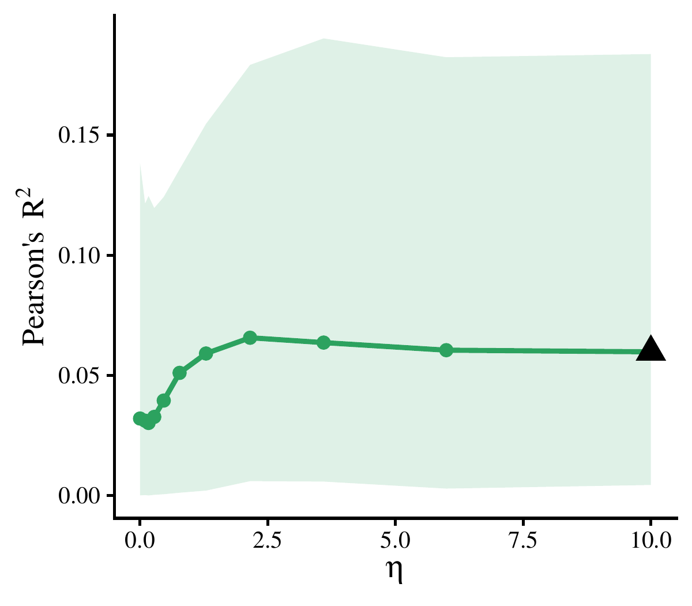
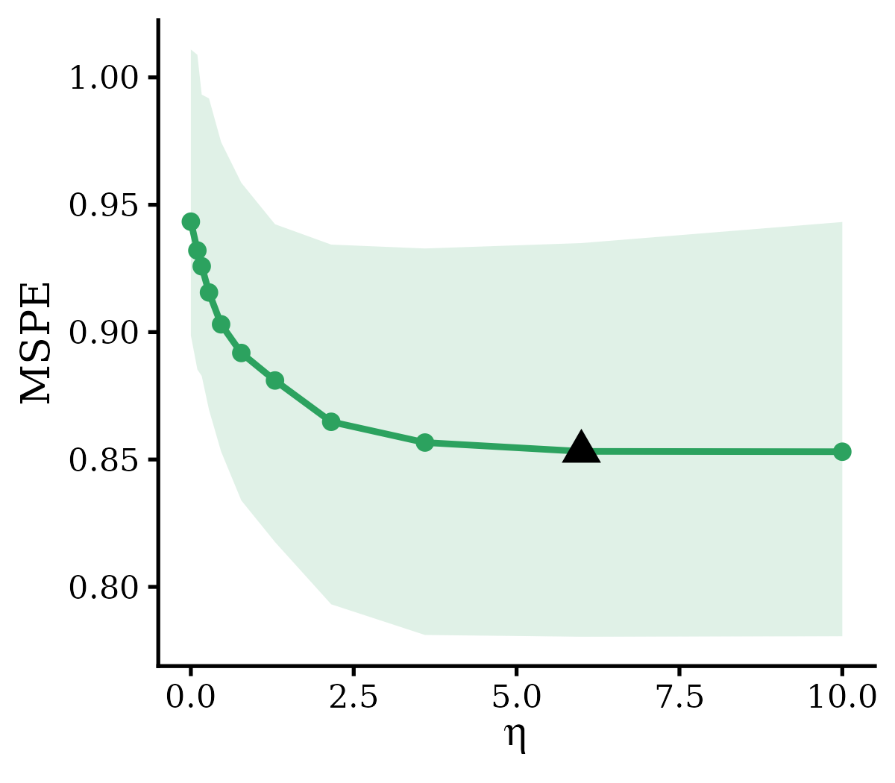
Integrating high heterogeneous external information
The example below illustrates the integration curves obtained when
BRIER2 incorporates external information with high
heterogeneity relative to the target data. Model performance is
evaluated using two metrics: Pearson’s \(R^2\) (left panel) and mean squared
prediction error (MSPE; right panel). As the integration weight \(\eta\) increases and more external
information is transferred to the target model, predictive performance
deteriorates, as indicated by an decrease in Pearson’s \(R^2\) and a increase in MSPE. This pattern
indicates that integrating external information does not improve
predictive accuracy and suggests that the relative heterogeneity between
the target and external data is high.
## Extract training data
X <- data$target$train$X
summary <- data$target$train$sumstats
summary$corr <- p2cor(summary$pval, summary$n, sign = sign(summary$stats))
XtX.list <- calLD(X, summary)
beta.external <- data$beta.external[, 3]
## Model fitting and hyper-parameter tuning
fit <- BRIERs(
sumstats = summary,
XtX = XtX.list$XtX,
beta.external = beta.external,
eta.list = c(0, exp(seq(log(0.1), log(10), length.out = 10)))
)
X_val <- standardize_X(data$target$validation$X)[[1]]
y_val <- standardize_X(as.matrix(data$target$validation$y))[[1]]
fit <- BRIERs.selection(
fit, criteria = "gaussian.mspe",
X.val = X_val,
y.val = y_val
)
## Plot mspe as a function of eta
out <- plot.eta(
fit,
X = data$target$testing$X, covar.data = data$target$testing$y,
criteria = "gaussian.mspe",
standardize.data = TRUE,
bootstrap = TRUE
)
out$plot
## Plot Pearson R2 as a function of eta
out <- plot.eta(
fit,
X = data$target$testing$X, covar.data = data$target$testing$y,
criteria = "gaussian.rsq",
standardize.data = TRUE,
bootstrap = TRUE
)
out$plot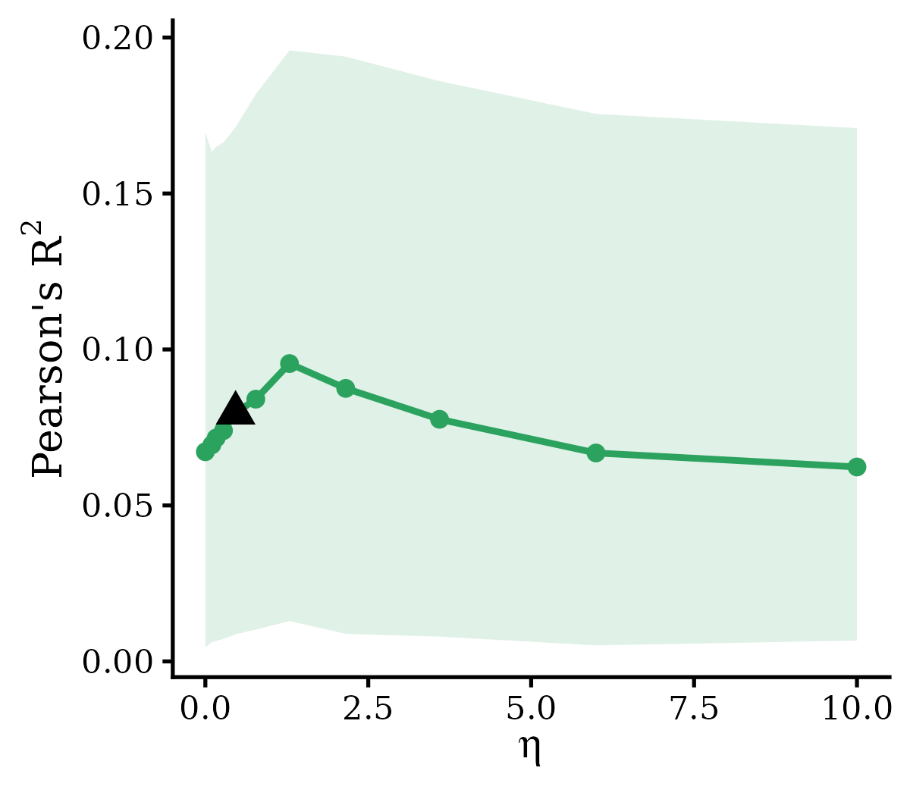
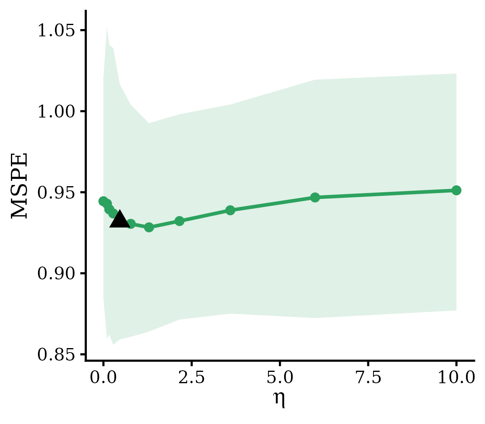
plot.box
The plot.box function provides a complementary
perspective for evaluating BRIER models. It visualizes the
distribution of predictive performance across bootstrap resamples using
boxplots, thereby capturing variability introduced by sampling
randomness. Below, we illustrate plot.box under settings
where the external information exhibits low and high heterogeneity
relative to the target (target) data.
Integrating low heterogeneous external information
In the example below, the external model achieves stronger predictive
performance than the target-only model (higher Pearson \(R^2\) and lower MSPE), suggesting
relatively low heterogeneity between the target and external data. By
appropriately integrating external information, the BRIER2
model further improves predictive accuracy, demonstrating the benefit of
information borrowing when external sources are well aligned with the
target population.
out <- plot.box(
fit,
X = data$target$testing$X, covar.data = data$target$testing$y,
criteria = "gaussian.mspe",
standardize.data = TRUE
)
out$plot
out <- plot.box(
fit,
X = data$target$testing$X, covar.data = data$target$testing$y,
criteria = "gaussian.rsq",
standardize.data = TRUE
)
out$plot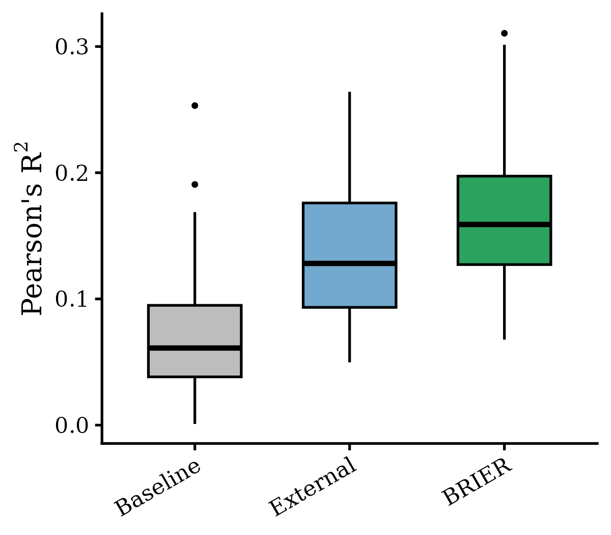
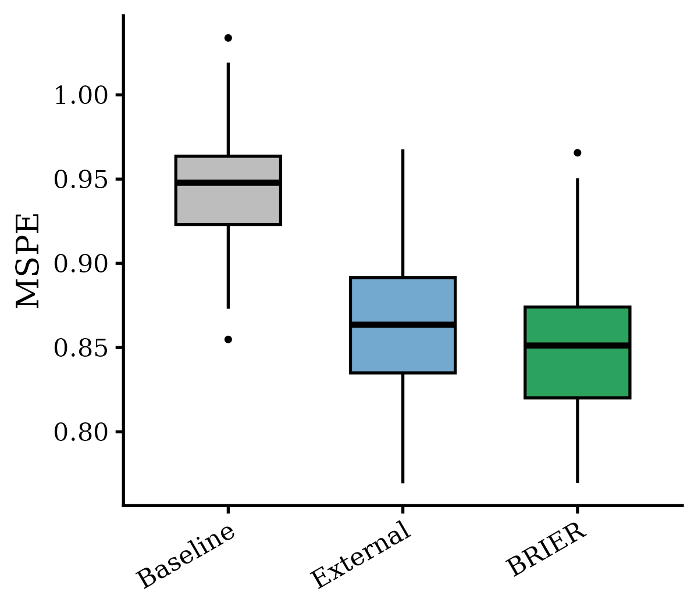
Integrating high heterogeneous external information
In contrast, the example below illustrates a setting where the external model performs poorly relative to the target-only model (lower Pearson \(R^2\) and higher MSPE), indicating substantial heterogeneity between the target and external data. As the integration weight increases, incorporating external information does not improve (and may even degrade) predictive performance. This pattern suggests that the external source is not well matched to the target population and may be excluded from joint integration.
out <- plot.box(
fit,
X = data$target$testing$X, covar.data = data$target$testing$y,
criteria = "gaussian.mspe",
standardize.data = TRUE
)
out$plot
out <- plot.box(
fit,
X = data$target$testing$X, covar.data = data$target$testing$y,
criteria = "gaussian.rsq",
standardize.data = TRUE
)
out$plot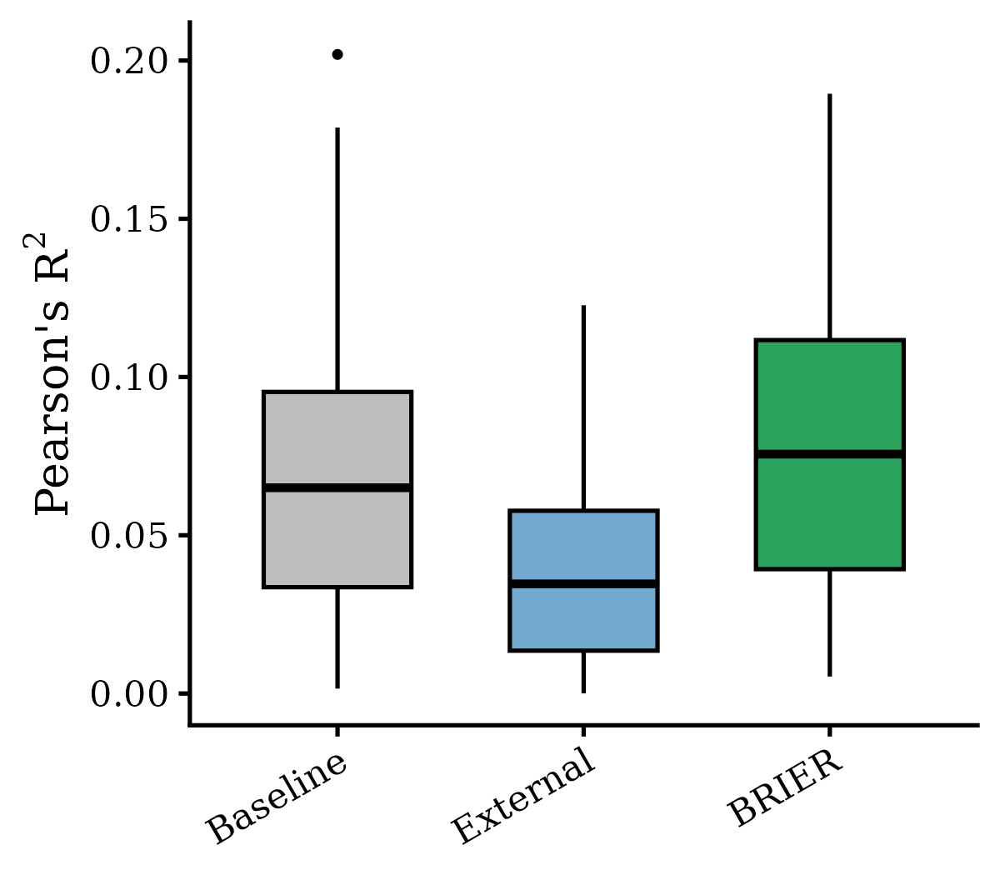
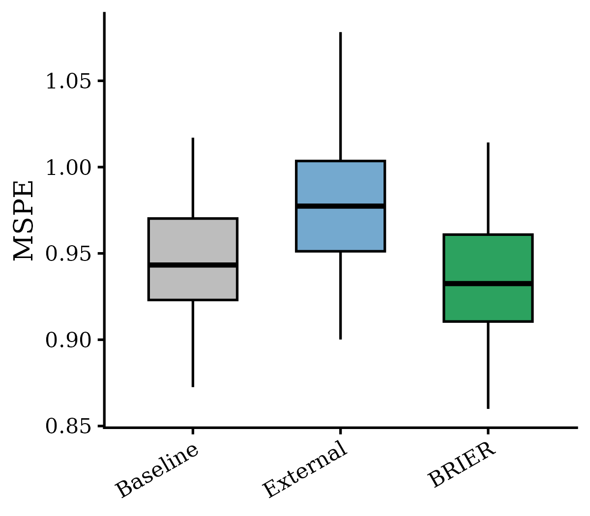
6.2 Variable importance
The plot.importance function provides a stability-based
assessment of variable importance by repeatedly re-validation the fitted
model on bootstrap resamples of the validation data. For each
replication, the procedure records which predictors enter the model, and
it summarizes their selection frequencies across all resamples. The
resulting plot displays the predictors ranked by how consistently they
are selected, offering an interpretable measure of feature importance
that complements effect-size estimates. High-frequency markers indicate
stable, reproducible signals that contribute to prediction performance,
whereas low-frequency markers may reflect noise or dataset-specific
fluctuations. This diagnostic is particularly valuable in
high-dimensional genomic settings, where model sparsity and sampling
variability can obscure truly informative predictors.
out <- plot.importance(
fit,
X = data$target$validation$X, covar.data = data$target$validation$y,
criteria = "gaussian.mspe",
standardize.data = TRUE
)
out$plot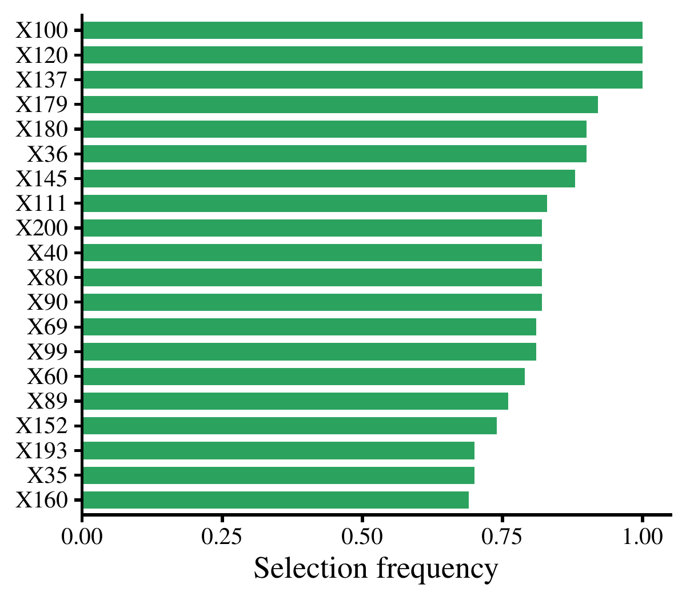
6.3 PRS stratification
The plot.strat function visualizes the discriminative
power of each fitted model by stratifying testing-set samples according
to predicted risk and comparing their observed outcome distributions.
Specifically, samples are partitioned into a high-risk group and a
low-risk group based on user-specified upper and lower percentile
cut-offs (e.g., the top 40% and bottom 40%) of the predicted values from
the target-only model, the external-only model, and the integrated
BRIER2 model. The resulting density plots overlay the
observed outcome distributions of the two strata for each model,
providing a direct visual comparison of how well each model separates
samples with different underlying outcomes. To quantify this separation,
the difference between the median observed outcomes of the upper and
lower strata is reported in the panel title; larger values indicate
stronger discrimination.
out <- plot.strat(
fit,
lower = 0.4, upper = 0.4,
X = data$target$validation$X, covar.data = data$target$validation$y,
standardize.data = TRUE
)
out$plot